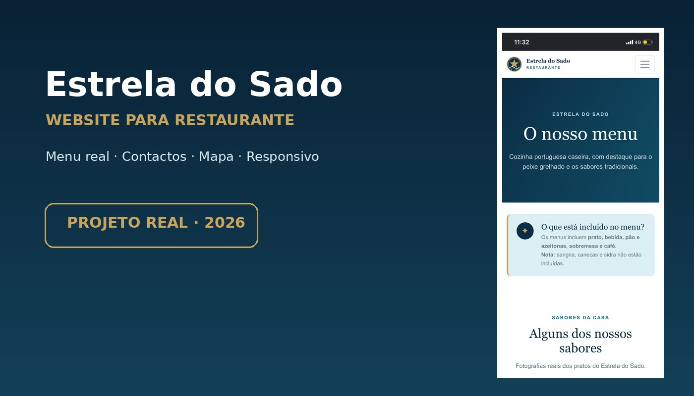

Design responsivo
Permite consultar o website em telemóveis, tablets e computadores com uma apresentação adaptada ao ecrã.
Website desenvolvido para um restaurante nas Praias do Sado, em Setúbal, com foco numa navegação simples, informação clara e boa experiência em telemóvel.

Necessidade a resolver: disponibilizar a ementa, contactos, localização, horários e informação sobre marcações num espaço digital organizado, sem depender de vários canais para consultar os dados essenciais.
Objetivo do projeto: apresentar o restaurante de forma cuidada, com navegação simples e uma experiência adaptada a computador e telemóvel.
Cada funcionalidade foi pensada para tornar a informação do restaurante mais fácil de encontrar.
Permite consultar o website em telemóveis, tablets e computadores com uma apresentação adaptada ao ecrã.
Facilita a consulta dos pratos e preços antes de visitar o restaurante.
Ajuda os visitantes a localizar o restaurante e a planear a deslocação.
Reúne os meios de contacto e a informação necessária para pedir uma marcação.
Permite aceder à presença do restaurante no Facebook a partir do website.
Disponibiliza o projeto através de um endereço público no GitHub Pages.
A estrutura do website permite consultar a ementa, conhecer os contactos e localizar o restaurante a partir de uma navegação organizada. Estes são benefícios funcionais do projeto, não métricas de vendas ou reservas.
Ver projeto online ↗Conta-me a tua ideia e podemos falar sobre o website ideal para o teu projeto.
Pedir orçamento